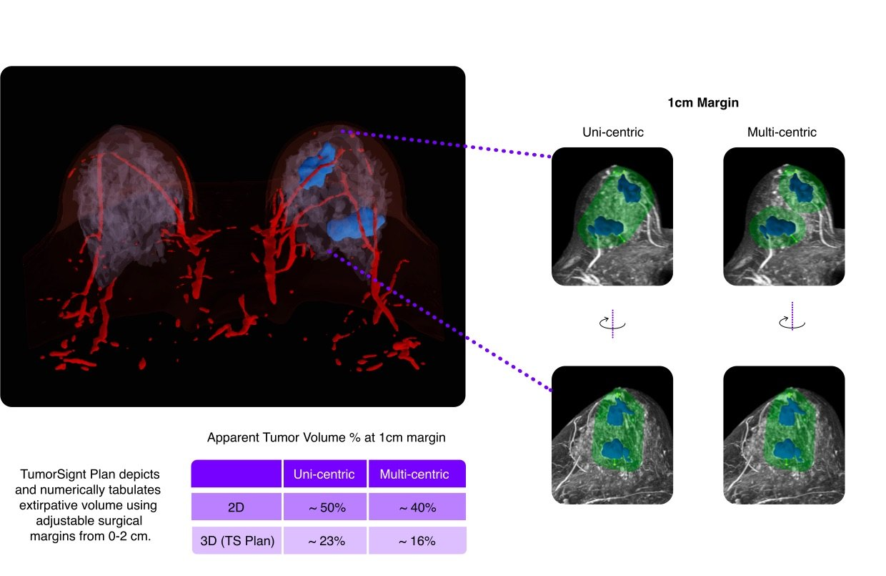
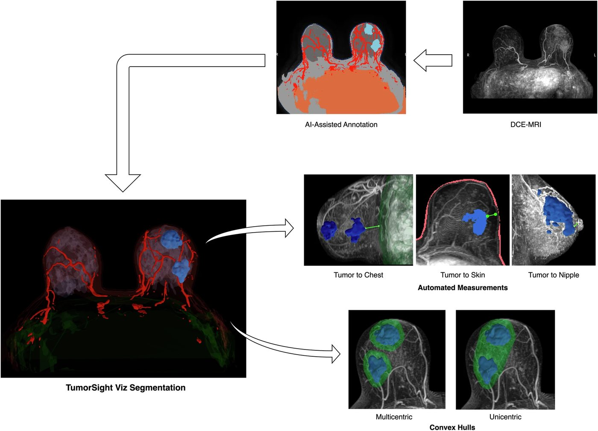

Experience
Machine Learning Engineer · SimBioSys
Nov 2021 – Present- Led design, development and validation of FDA-cleared 3D multi-label segmentation models for breast DCE-MRI that produce patient-specific digital twins of breast tissue and lesions (510(k): #K231130, #K243189, #K251766).
- Cut the second-generation segmentation system's false-negative rate from ~45% to under 10% through model improvements and post-processing updates.
- Replaced a five-model segmentation ensemble with one model calibrated for breast MRI and the cancers found in it, which cut runtime from 20 minutes to about 3 minutes.
- Built MRI foundation models using Swin-UNETR, pretrained self-supervised on ~10k patients with DeepSpeed, that raised downstream segmentation and risk-stratification benchmarks by 10% without new annotation.
- Co-led an FDA-cleared multimodal survival model combining structured clinical data with imaging features to predict 5-year recurrence risk (510(k): #K260023).
- Contributed to verification and validation of the multimodal risk model by writing tests that checked it met accuracy standards and gave repeatable, reproducible predictions within the expected tolerance.
- Benchmarked 3D registration for motion correction across contrast phases: rigid (SimpleITK), learning-based deformable (VoxelMorph) and a locally affine, intensity-aware method (Periaswamy & Farid, 2006).

- Built an automated evaluation suite that scores every major segmentation model iteration on ~26 metrics across 5 categories, offline and online.
- Broke results down by patient cohort, tumor size, nodal status, MRI field strength (1.5T vs 3.0T) and scanner manufacturer.
- Paired the metric suite with manual review by an in-house expert to compare model versions and write the release summary.
- Gated every release tag on end-to-end pytest model-performance tests, then reviewed models in a staging environment before production.
- Co-authored the test plans for the segmentation and risk models, and wrote CAPA write-ups under an ISO 13485 quality system.
- Turned clinician feedback from 3 sites, relayed through clinical SMEs, into hotfixes shipped in 2 days and a false discovery rate cut from 30% to 11% across 3 releases.
- Designed a multi-document LLM synthesis pipeline that combines clinical reports into structured outputs with ~88% schema compliance and ~75% clinical agreement, now in staging with clinician feedback.
- Built a HIPAA-compliant document-extraction pipeline (OCR + small LLMs) that structured ~3,000 pathology reports and cut manual curation by 40%.
- Built a LangGraph + LangChain agentic pipeline for surgical-planning literature triage with hybrid retrieval and reranking on self-hosted LLMs (Qwen3, MedGemma via vLLM), reaching ~85% expert agreement.
- Built an automated, Git-versioned AWS pipeline (S3, ECR, EC2, Batch) for multi-GPU training, with containerized CI/CD and internal APIs for inference, that cut development and deploy cycles by 85% (2 weeks to 2 days).
- Ran imaging ETL over 5+ TB (~10k patients, 50k+ MRI series) with cron jobs and AWS Batch.
- Tracked experiments in MLflow at first, then moved training, tuning and test metrics and the model registry to Weights & Biases.
- Tracked lineage with a dataset manifest per model checkpoint and md5-verified production checkpoints.
- Coordinated external vendors and internal teams to run an FDA-compliant annotation pipeline that scaled training and validation data 10× with model-assisted pre-labels from in-house segmentation models and standardized QA protocols.
- Served as lead engineer on segmentation, writing design docs that turned product goals into model architecture and data requirements and presenting an executive summary of the improvements at every major release.
- Mentored teammates on AI-assisted development with Cursor and other coding-agent tools.
Tools PyTorch, PyTorch Lightning, MONAI, AWS, Docker, LangGraph, LangChain, Pydantic, vLLM, W&B, Hugging Face, FastAPI
Featured on LinkedIn Work samples for this role
Summer Machine Learning Intern · PediaMetrix
Jul 2021 – Oct 2021- Developed classification and segmentation models for image-quality estimation in pediatric care.
- Optimized and deployed the classification pipeline to GCP and to edge devices.
Tools PyTorch, TensorFlow, TFX, TF Lite, Keras, GCP, W&B, Optuna
Summer Machine Learning Intern · LumoScan
Aug 2021 – Sep 2021- Fine-tuned deep learning models for skin-lesion detection and classification.
- Built a skin-lesion abnormality detection pipeline and an interactive dashboard for reviewing results.
In the news
Projects
PubMed RAG with citation checksIn progress
A citation-checked question-answering CLI over a frozen set of 200 breast-cancer PubMed abstracts. It compares four retrieval setups on the same questions: dense (pgvector), BM25, hybrid with reciprocal rank fusion, and hybrid plus a MiniLM cross-encoder reranker. A validator drops any generated claim that does not quote its cited abstract word for word, without another model call.
Skill-based SDLC vs. plain AI-assisted codingIn progress
A pre-registered pilot on whether a targeted set of agent skills changes what a coding agent does in an existing codebase. The agent extends a frozen RoBERTa news classifier with two new encoders (ModernBERT, then UltraBERT) and, in a second task, fixes seeded CVEs, once with skills and once without. I score each run against a private rubric (broken contracts, duplicated code, "done" claimed without running CI, invented advisories) and record CI results, diff size, tokens and wall-clock time.
News classification: fine-tuning vs. promptingIn progress
Benchmarks a fine-tuned encoder (RoBERTa) against zero-shot, decoder-only LLMs served through vLLM on N24News category classification, to measure when prompting beats fine-tuning.
Publications
Performance of an AI-powered visualization software platform for precision surgery in breast cancer patients

Seeing beyond cancer: multi-institutional validation of object localization and 3D semantic segmentation using deep learning for breast MRI
Education
M.S., Robotics Engineering · WPI
2019 – 2021B.Tech., Mechanical Engineering · NIT Tiruchirappalli
2015 – 2019Skills
- Languages
- Python, SQL
- ML & imaging
- PyTorch, PyTorch Lightning (DDP), DeepSpeed, MONAI, scikit-learn, SimpleITK, VoxelMorph, DICOM / NIfTI
- LLM & NLP
- LangGraph, LangChain, vLLM, Pydantic, Hugging Face Transformers, spaCy, prompt engineering
- Cloud & MLOps
- AWS (S3, ECR, EC2, Batch), Docker, CI/CD, FastAPI, Weights & Biases, MLflow